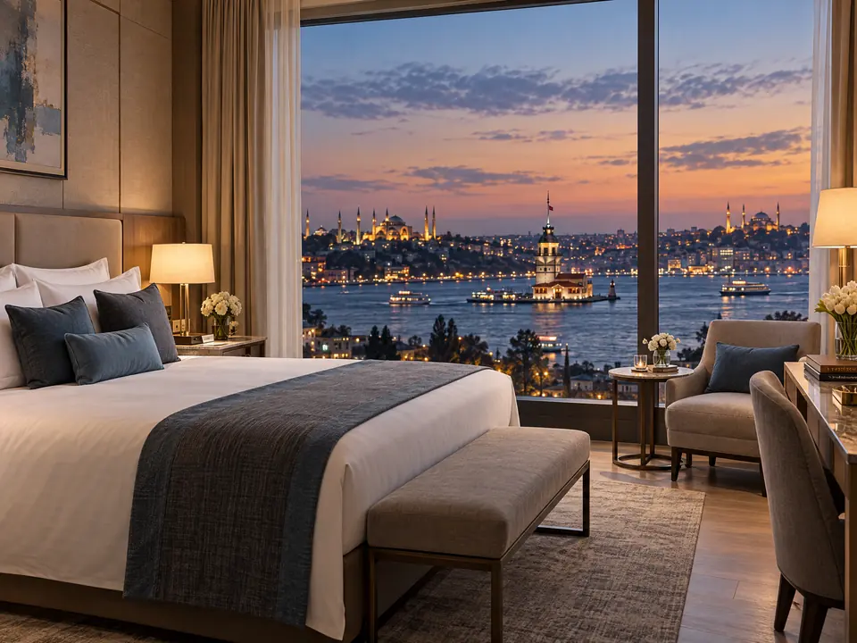

17 صفحة علاجية
الجراحة التجميلية والترميمية
إجراءات جراحية تشمل الوجه والثدي والجسم.
استكشف الفئة الجراحة التجميلية والترميميةأستراليا · الإمارات · تركيا
تنسيق شخصي للسفر العلاجي يربط المرضى من أستراليا والإمارات العربية المتحدة والأسواق الدولية الأخرى بمقدّمي رعاية صحية مستقلين في تركيا.
تنسيق دقيق. وإرشاد بشفافية.
threeeight35° خدمة تنسيق، وليست مقدّم رعاية صحية. نحن لا نشخّص ولا نصف ولا نوصي بأي علاج. ويُقدَّم كل تقييم سريري وكل رعاية طبية بشكل مستقل من قِبل أخصائيي رعاية صحية مرخّصين في تركيا.
الفئات الطبية
ثماني فئات طبية، لكل منها صفحاتها العلاجية. تشرح صفحات العلاج كيفية التخطيط وما يجب التأكد منه، بينما تبقى القرارات السريرية لمقدّم الرعاية المعالج.
17 صفحة علاجية
إجراءات جراحية تشمل الوجه والثدي والجسم.
استكشف الفئة الجراحة التجميلية والترميمية15 صفحة علاجية
علاجات الأسنان الترميمية والزراعة والتجميل وعلاج اللثة.
استكشف الفئة علاجات الأسنان6 صفحات علاجية
رعاية العيون وتصحيح عيوب الانكسار.
استكشف الفئة طب العيون وتصحيح النظر3 صفحات علاجية
إجراءات الأيض وجراحات السمنة، بما فيها الجراحة الأولى والجراحة التصحيحية.
استكشف الفئة جراحات السمنة وإنقاص الوزن7 صفحات علاجية
تقييم الخصوبة ومراحل علاجها.
استكشف الفئة أطفال الأنابيب وعلاجات الخصوبة8 صفحات علاجية
خدمات التشخيص والكشف المبكر.
استكشف الفئة الفحوصات الصحية والكشف الوقائي8 صفحات علاجية
إجراءات محددة في الجراحة العامة إلى جانب صفحات أدلة أشمل.
استكشف الفئة الجراحة العامةتنسيق يتمحور حول المريض
يتطلب السفر العلاجي تخطيطاً مدروساً، وتواصلاً مباشراً مع أخصائيي الرعاية الصحية المعالجين، وترتيبات تتسم بالشفافية.
من استفسارك الأول وحتى التخطيط لما قبل السفر، تحصل على دعم مخصّص لتنسيق الجوانب العملية من رحلتك.
عند الاقتضاء وبموافقتك، قد تُقدَّم المعلومات الصحية ذات الصلة إلى أخصائيي رعاية صحية مستقلين في تركيا لإجراء تقييم أولي. ويبقى التقييم السريري وتحديد ملاءمة العلاج وقرارات العلاج بالكامل من مسؤولية أخصائيي الرعاية الصحية المعالجين.
يمكن لدعم التنسيق باللغة العربية أن يساعدك في التواصل العملي وترتيبات الحضور حول الاستشارات والمواعيد الطبية المحددة.
ترتيبات منسّقة
يُنسَّق كلٌّ من الإقامة والتنقلات كجزء أساسي من رحلتك العلاجية، بما يتناسب مع برنامجك الشخصي وخطة تعافيك.

الراحة والاسترخاء
نرتّب إقامتك في فندق مختار من فئة 5 نجوم على مقربة من المنشأة الصحية التي تتلقى فيها العلاج، لتحظى بمكان مريح وهادئ للراحة بين المواعيد وخلال فترة التعافي. وتُؤكَّد تفاصيل الترتيبات في عرضك المكتوب.
الإقامة لك ولضيوفك مشمولة في سعر باقتك، لعدد الليالي والضيوف الموضّح لباقتك.
تُؤكَّد في عرضك المكتوب. الإقامة ليست رعاية طبية.
السهولة والخصوصية
يتولى سائق خاص نقلك بين المطار وفندقك ومواعيدك في العيادة، فلا تحتاج إلى ترتيب سيارات الأجرة أو البحث عن طريقك في مدينة غير مألوفة. وتُؤكَّد تفاصيل الترتيبات في عرضك المكتوب.
التنقلات الخاصة في إسطنبول بين المطار وفندقك ومواعيدك في العيادة مشمولة في سعر باقتك.
تُؤكَّد في عرضك المكتوب. النقل ليس خدمة سريرية.
تشمل كل باقة الإقامة والتنقلات الخاصة في إسطنبول لعدد الليالي والضيوف الموضّح لتلك الباقة. إذا كنت تفضّل ترتيب ذلك بنفسك، فسنناقش الأمر معك ونقدّم لك سعراً نهائياً للباقة. تُدفع الليالي الإضافية التي تختارها مباشرةً إلى الفندق، أما الإقامة الأطول التي ينصح بها طبيبك المعالج فتُسعَّر بشكل منفصل.
عرض الباقاتالباقات
تشمل أسعار باقات threeeight35° خدمات التنسيق غير السريرية وإقامتك وتنقلاتك الخاصة في إسطنبول. ويُدفع العلاج الطبي وتذاكر الطيران بشكل منفصل.
العلاج الطبي وتذاكر الطيران غير مشمولة في باقاتنا. يُسعَّر العلاج الطبي ويُدفع مباشرةً إلى العيادة أو المستشفى المستقل، وتحجز أنت رحلات الطيران الخاصة بك. يشمل سعر كل باقة التنسيق والإقامة والتنقلات الخاصة في إسطنبول للمدة وعدد الضيوف الموضّحين. إذا كنت تفضّل ترتيب إقامتك أو تنقلاتك بنفسك، فسنناقش ذلك معك ونقدّم لك سعراً نهائياً للباقة. ويُقدَّم لك العرض الكامل، بما في ذلك ما هو مشمول وغير مشمول، كتابياً قبل المتابعة.
باقة تنسيق سفر علاجي بسعر ثابت
A$4,950
يشمل سعر الباقة
يوضّح عرضك المكتوب ما تشمله باقتك وما لا تشمله من خدمات التنسيق المؤكَّدة.
استفسر عن باقة الرعاية الأساسيةباقة تنسيق سفر علاجي بسعر ثابت
A$9,900
يشمل سعر الباقة
يوضّح عرضك المكتوب ما تشمله باقتك وما لا تشمله من خدمات التنسيق المؤكَّدة.
استفسر عن باقة العافية والتعافي التنفيذيةباقة تنسيق سفر علاجي
ابتداءً من A$14,900
نظراً لأن نطاق هذه الباقة مخصّص، يُؤكَّد السعر النهائي لباقة التنسيق من threeeight35° كتابياً بعد تحديد نطاق الرحلة وقبل موافقتك.
يشمل سعر الباقة
يوضّح عرضك المكتوب ما تشمله باقتك وما لا تشمله من خدمات التنسيق المؤكَّدة.
استفسر عن باقة الرحلة الصحية المخصصة VIPرحلة المريض
من الاستفسار الأول حتى تنسيق المتابعة بعد عودتك.
أخبرنا بفئة العلاج التي ترغب في استكشافها والتوقيت المفضّل لسفرك. يُرجى عدم إرسال السجلات الطبية أو نتائج الفحوصات أو بيانات جواز السفر أو الدفع عبر نموذج الموقع.
نربطك بمقدّمي رعاية صحية ومستشفيات مستقلة في إسطنبول، ونرتّب الاستشارات وعروض الأسعار.
عند الاقتضاء، قد تُقدَّم المعلومات الصحية ذات الصلة إلى أخصائيي رعاية صحية مستقلين في تركيا لإجراء تقييم أولي. ويتم ذلك عبر إجراءات خاصة لحماية المعلومات الصحية والإفصاح عنها خارج البلاد، وليس عبر نموذج الموقع العام.
قبل المتابعة، تستلم عرضاً يوضّح باقة التنسيق التي اخترتها، وما هو مشمول وغير مشمول، وأي إضافات مسعّرة بشكل منفصل، وعرض سعر العلاج من مقدّم الرعاية.
إقامتك وتنقلاتك الخاصة في إسطنبول مشمولة في باقتك، وننسّق لك الدعم باللغة العربية خلال إقامتك.
يبقى التقييم السريري وتحديد ملاءمة العلاج والموافقة المستنيرة وجميع قرارات العلاج، بما في ذلك تحديد موعد قدرتك على السفر عائداً، من مسؤولية أخصائيي الرعاية الصحية المعالجين.
يستمر تنسيق المتابعة بعد عودتك. تأكّد مسبقاً من السجلات التي ستعود بها، ومن خطة التعامل مع أي مخاوف بعد عودتك.
من نحن
وكالة threeeight35° للسفر العلاجي هي خدمة مستقلة لتنسيق السفر العلاجي للمرضى من أستراليا والإمارات العربية المتحدة والأسواق الدولية الأخرى الذين يستكشفون العلاج في تركيا. نتولى الجانب العملي من الرحلة، ونترك كل قرار سريري لأطباء مستقلين ومرخّصين.

تعرّف على المؤسس
مؤسس وكالة threeeight35° للسفر العلاجي | أبوظبي
أقيم في أبوظبي منذ أكثر من 15 عاماً، وأتحدث الإنجليزية والعربية والتركية. وقبل تأسيس وكالة threeeight35° للسفر العلاجي، عملت لمدة عامين في مجال السياحة العلاجية في إسطنبول، حيث اكتسبت خبرة في علاقات المرضى وتطوير الأعمال.
لست طبيباً، ولا أقدّم استشارات طبية ولا أوصي بأي علاج. يتمثل دوري في جعل رحلتك العلاجية واضحة ومنظّمة ومنسّقة بعناية من البداية إلى النهاية. أتولى التفاصيل العملية لرحلتك، بينما تبقى جميع القرارات السريرية من مسؤولية أخصائيي الرعاية الصحية المعالجين.
عن threeeight35°خدمة المرضى
تواصل مباشرةً مع مكاتب التنسيق في أستراليا أو الإمارات أو تركيا، أو أرسل استفسارك أدناه.
مكتب أستراليا
مكتب الإمارات
العمليات في تركيا
التنسيق والتواصل داخل تركيا خلال إقامتك.
تنبيه للطوارئ: في حالة الطوارئ الطبية في تركيا، اتصل على الرقم 112. هذا رقم خدمة الطوارئ، وهو منفصل عن أرقام التواصل مع threeeight35°.
ابدأ الخطوة الأولى
أخبرنا بما ترغب في استكشافه، وسيساعدك فريقنا على فهم آلية التنسيق والخطوات العملية التالية.